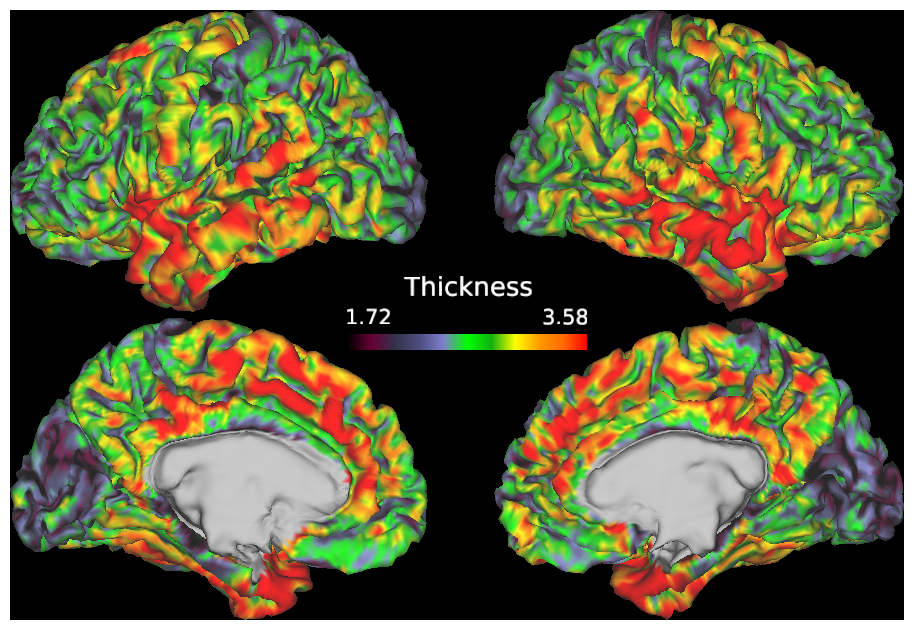
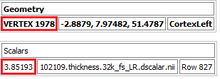

The Cifti Data Structure in R
Introduction
The CIFTI format is a neuroimaging data format designed by researchers involved with the Human Connectome Project to make working with disjoint data (typically cortical and subcortical) at the same time easier. CIFTI (and GIFTI) are standard outputs from the HCP Preprocessing Pipeline and can be generated using fmriprep or ciftify as well, but very little information exists on how to use these formats during data analysis within different platforms. This guide will cover how to import and use these data structures in R.
All data used in this tutorial comes from the HCP Young Adult Dataset. These data are freely available for research or learning purposes from their online repository. The exact subject numbers won’t be shared here, but all participants in that study who had at least one MRI session will have the same data files. If you would like to practice on these data, you can download the Preprocessed data for some participants, but be aware a full preprocessed dataset can be upwards of 60 GB per person. Here, we will only look at structural preprocessed data (derived from T1w and T2w) and a single preprocessed resting state scan.
Packages specific to gifti and cifti structures will be introduced below, but we will also be using the tidyverse suite of packages for data wrangling as well.
GIFTI
We will start with gifti because it is an easier format to understand and will help organize cifti data later on. All gifti data can be loaded using the gifti library which can be downloaded from CRAN.
library(gifti)All gifti data will be loaded using the read_gifti command. readgii and readGIFTI are both aliases for read_gifti and so can be used the same way as well if you prefer typing one of those. The output of these commands will be a named list.
Surfaces
All gifti files describe some form of information about a single cortical hemisphere, no subcortical information is included. All generated gifti files from a standard preprocessing pipeline will include which hemisphere the gifti describes in the name (a practice everyone should use). The most common giftis will be the structural surfaces themselves that other data are shown on. These files always end with the surf.gii extension.

As said above, these surfaces can be imported using one of gifti’s read functions.
lhpial <- read_gifti('data/102109/fsaverage_LR32k/102109.L.pial.32k_fs_LR.surf.gii')
rhpial <- read_gifti('data/102109/fsaverage_LR32k/102109.R.pial.32k_fs_LR.surf.gii')Lists from gifti files are going to have 8 top-level fields with the following names:
names(lhpial)[1] "data" "file_meta" "data_meta"
[4] "version" "transformations" "parsed_transformations"
[7] "label" "data_info" Most of the interesting information is in the data field of the output list.
glimpse(lhpial$data)List of 2
$ pointset: num [1:32492, 1:3] -4 -21.79 -52.8 -4.21 -25.59 ...
$ triangle: int [1:64980, 1:3] 68 180 180 181 181 182 182 183 183 184 ...You can see that for the lh pial surface, data has two subfields: pointset and triangle. pointset gives the spatial coordinates for each vertex on the surface which will change between pial, inflated, very inflated, etc. surfaces, and triangle gives a list of vertices that make up each face which does not change between surfaces. The actual data in the pointset and triangle fields won’t be useful that often, the important part is the total number of vertices which you can get from the number of rows in pointset. You can see this surface has 32492 vertices, and the right hemisphere surfaces also have 32492 vertices. The fsaverage_LR32k surfaces are in a template space, and each surface should have the same number of vertices across participants. The same goes for the 164k surfaces, but the number of vertices is larger. If you’re working with the native space surfaces, the number of vertices will be dependent on subject and hemisphere.
Metadata
Other data of interest in the surface files can be found in the data_meta field such as the primary and secondary structure the surface describes in case this information was left out of the file name.
Metric and Label Data
All other gifti files should have extensions such as func.gii, shape.gii, or label.gii. These contain data that describe some property of vertices on the surface such as thickness, curvature, or timeseries data. Again, these can also be loaded using one of the read commands above.
Metric
Metric data contain continuous values and are stored in func.gii or shape.gii files depending on whether the data describe functional or structural information. For example, we can load the thickness surfaces. The surface overlays can be seen below.

lhthick <- read_gifti('data/102109/fsaverage_LR32k/102109.L.thickness.32k_fs_LR.shape.gii')
rhthick <- read_gifti('data/102109/fsaverage_LR32k/102109.R.thickness.32k_fs_LR.shape.gii')These surfaces will have the same fields as the surface files.
names(lhthick)[1] "data" "file_meta" "data_meta"
[4] "version" "transformations" "parsed_transformations"
[7] "label" "data_info" Similar to last time, the data field is the one of main interest and will contain at least one subfield, normal in this case.
glimpse(lhthick$data)List of 1
$ normal: num [1:32492, 1] 3.16 2.27 3.05 3.5 2.22 ...For all metric giftis, the number of values equals the number of vertices on the surface. This is the case even if some vertices would not have a reasonable value. For example, vertices making up the medial wall do not have a calculated thickness and are uncolored in the above image. The thickness gifti assigns a numeric value to them anyway since those vertices need to be accounted for and will assign a value of 0 in this case. This is not the case for cifti data which will be seen later. There are 29696 vertices on the left hemisphere and 29716 on the right that have a measurable thickness.
Be aware that R uses base-1 indexing, but the vertex numbering system is base-0. This means that vertex 0 on the surface has the thickness value assigned at index 1 in R. For example, we can get the thickness of vertex 1978 for a participant in wb_view, seen below.

But index 1978 has thickness value 4.08641. To get the correct thickness value for this vertex, you would get the thickness from index 1979 of 3.85193.
While thickness data are stored in an array because each vertex only has a single thickness value, functional timeseries data are stored as a matrix. Functional data can be loaded and interacted with the same way though.
lhrest_native <- read_gifti('data/102109/Results/rfMRI_REST1_LR/rfMRI_REST1_LR.L.native.func.gii')Here, we are loading the native space version of the resting state scan because the preprocessed data did not have gifti versions of the functional scans in fs_LR_32k space. The number of vertices will differ, but the idea is exactly the same.
glimpse(lhrest_native$data[1:5])List of 5
$ normal: num [1:166272, 1] 7196 7087 7296 6051 6809 ...
$ normal: num [1:166272, 1] 7273 7145 7323 5948 6840 ...
$ normal: num [1:166272, 1] 7355 7198 7313 6233 7064 ...
$ normal: num [1:166272, 1] 7413 7292 7497 6286 7138 ...
$ normal: num [1:166272, 1] 7424 7261 7408 6295 7069 ...length(lhrest_native$data)[1] 1200Now, the data field has more than one subfield, it now has 1200 subfields. This represents the 1200 timepoints in the scan. Each one of the subfields has 166272 values in it representing the scan value at each vertex in that hemisphere for a given timepoint (on the native space surface). Each timepoint is stored as an individual list of functional values within the data field.
Storing timepoints as a series of lists can make the data difficult to work with. We can instead extract the data and store it in a simplified 2D matrix. Columns will represent timepoints which rows represent vertices, the standard representation for CIFTI data.
lhrest_native_data <- do.call(cbind,lhrest_native$data)
nrow(lhrest_native_data)[1] 166272ncol(lhrest_native_data)[1] 1200lhrest_native_data has been created as a matrix with 166272 rows each corresponding to a vertex and 1200 columns each corresponding to a timepoint.
An important note is that this matrix takes up a large amount of memory because there are 199526400 elements in the matrix for one hemisphere of one person. When using this sort of data across a large number of participants, you will need a large amount of memory or do some form of summarization as data is being imported using a custom function. This may be the case even for fs_LR_32k space data even though the number of vertices per hemisphere is much smaller than the native space scan used here.
Label
Label data are made up of integer values that each map to different names, typically for regions of interest or parcellation areas. Here, we will load the aparc label files that are automatically generated and transferred from FreeSurfer.
lhlabel <- read_gifti('data/102109/fsaverage_LR32k/102109.L.aparc.32k_fs_LR.label.gii')
rhlabel <- read_gifti('data/102109/fsaverage_LR32k/102109.R.aparc.32k_fs_LR.label.gii')These label files have the same structure as the metric files above where the data field gives the integer assignment for each vertex, but the label field is also used to give a list of names assigned to the integers as well as their RGB value for plotting on a surface.
lhlabel$label Key Red Green Blue Alpha
??? "0" "0" "0" "0" "0"
L_bankssts "1" "0.0980392" "0.392157" "0.156863" "1"
L_caudalanteriorcingulate "2" "0.490196" "0.392157" "0.627451" "1"
L_caudalmiddlefrontal "3" "0.392157" "0.0980392" "0" "1"
L_corpuscallosum "4" "0.470588" "0.27451" "0.196078" "1"
L_cuneus "5" "0.862745" "0.0784314" "0.392157" "1"
L_entorhinal "6" "0.862745" "0.0784314" "0.0392157" "1"
L_fusiform "7" "0.705882" "0.862745" "0.54902" "1"
L_inferiorparietal "8" "0.862745" "0.235294" "0.862745" "1"
L_inferiortemporal "9" "0.705882" "0.156863" "0.470588" "1"
L_isthmuscingulate "10" "0.54902" "0.0784314" "0.54902" "1"
L_lateraloccipital "11" "0.0784314" "0.117647" "0.54902" "1"
L_lateralorbitofrontal "12" "0.137255" "0.294118" "0.196078" "1"
L_lingual "13" "0.882353" "0.54902" "0.54902" "1"
L_medialorbitofrontal "14" "0.784314" "0.137255" "0.294118" "1"
L_middletemporal "15" "0.627451" "0.392157" "0.196078" "1"
L_parahippocampal "16" "0.0784314" "0.862745" "0.235294" "1"
L_paracentral "17" "0.235294" "0.862745" "0.235294" "1"
L_parsopercularis "18" "0.862745" "0.705882" "0.54902" "1"
L_parsorbitalis "19" "0.0784314" "0.392157" "0.196078" "1"
L_parstriangularis "20" "0.862745" "0.235294" "0.0784314" "1"
L_pericalcarine "21" "0.470588" "0.392157" "0.235294" "1"
L_postcentral "22" "0.862745" "0.0784314" "0.0784314" "1"
L_posteriorcingulate "23" "0.862745" "0.705882" "0.862745" "1"
L_precentral "24" "0.235294" "0.0784314" "0.862745" "1"
L_precuneus "25" "0.627451" "0.54902" "0.705882" "1"
L_rostralanteriorcingulate "26" "0.313726" "0.0784314" "0.54902" "1"
L_rostralmiddlefrontal "27" "0.294118" "0.196078" "0.490196" "1"
L_superiorfrontal "28" "0.0784314" "0.862745" "0.627451" "1"
L_superiorparietal "29" "0.0784314" "0.705882" "0.54902" "1"
L_superiortemporal "30" "0.54902" "0.862745" "0.862745" "1"
L_supramarginal "31" "0.313726" "0.627451" "0.0784314" "1"
L_frontalpole "32" "0.392157" "0" "0.392157" "1"
L_temporalpole "33" "0.27451" "0.0784314" "0.666667" "1"
L_transversetemporal "34" "0.588235" "0.588235" "0.784314" "1"
L_insula "35" "1" "0.752941" "0.12549" "1" You can see there’s an integer value 0 in the table that vertices with an unknown assignment might be given instead. Vertices with no label assignment at all will have a value of -1. It will be meaningful to filter out vertices that have values of either 0 or -1 when performing analyses.
CIFTI
CIFTI files are a file type that can combine data from both hemispheres as well as subcortical regions. All cifti files can be imported using the cifti package which can be installed from CRAN. The cifti package also installs gifti as a dependency.
library(cifti)As opposed to gifti, cifti files can contain information about both hemispheres as well as subcortical regions in the same file. The basic import function is read_cifti (readcii and readCIFTI are also aliases). For example, we can go ahead and read in the subject’s thickness cifti file.
thick_cii <- read_cifti('data/102109/fsaverage_LR32k/102109.thickness.32k_fs_LR.dscalar.nii')Warning in read_cifti("data/102109/fsaverage_LR32k/
102109.thickness.32k_fs_LR.dscalar.nii"): Dimensions of the data > 2, so no
transposing done!The cifti list structure in R is slightly different from the gifti structure.
names(thick_cii)[1] "NamedMap" "BrainModel" "data" "hdr" "filename"
[6] "drop_data" "trans_data"Here, we will have a few fields of interest:
NamedMap: contains a list of map names if multiple maps are stored in the same file. For instance, curvature, thickness, and Myelin values could all be stored in the same CIFTI file.BrainModel: List of brainordinates which have data. Brainordinates from different areas will be stored in different lists withinBrainModel. Sometimes, the names of the areas are not given in the structure but can be read directly from the cifti file. See below.data: field containing the data of interest. Data are stored in a 1D array or 2D matrix where rows refer to the brainordinates concatenated from different areas. For 2D data, columns are typically timepoints.
As opposed to gifti data from above, only brainordinates that have data assigned to them are given in the data field. In order to accurately assign data to the correct brainordinate and area, you need to use the values from the BrainModel field. For example, let’s look at the thickness cifti file we loaded earlier.
glimpse(thick_cii$BrainModel)List of 2
$ : num [1:29696] 0 1 2 3 4 5 6 8 9 10 ...
..- attr(*, "IndexOffset")= num 0
..- attr(*, "IndexCount")= num 29696
..- attr(*, "BrainStructure")= chr "CIFTI_STRUCTURE_CORTEX_LEFT"
..- attr(*, "ModelType")= chr "CIFTI_MODEL_TYPE_SURFACE"
..- attr(*, "SurfaceNumberOfVertices")= num 32492
$ : num [1:29716] 0 1 2 3 4 5 6 8 9 10 ...
..- attr(*, "IndexOffset")= num 29696
..- attr(*, "IndexCount")= num 29716
..- attr(*, "BrainStructure")= chr "CIFTI_STRUCTURE_CORTEX_RIGHT"
..- attr(*, "ModelType")= chr "CIFTI_MODEL_TYPE_SURFACE"
..- attr(*, "SurfaceNumberOfVertices")= num 32492We can see there are 29696 thickness values assigned to the left cortex and 29716 assigned to the right cortex and the data are the vertex numbers which have thickness data. The data field is concatenated in order of subfields in BrainModel. In other words, the first 29696 rows are left hemisphere data and the last 29716 rows are right hemisphere data if there is only cortical data. For ciftis with both cortical and subcortical areas, subcortical data will be concatenated following the right hemisphere.
Subcortical Area Names
While the cortical hemispheres are named in the cifti’s R structure, the subcortical areas are not. For example, we can import a cifti with resting state data for both cortex and subcortical areas and look at the attributes for the first 4 areas.
rest_cii <- read_cifti('data/102109/Results/rfMRI_REST1_LR/rfMRI_REST1_LR_Atlas.dtseries.nii')
glimpse(rest_cii$BrainModel[1:4])List of 4
$ : num [1:29696] 0 1 2 3 4 5 6 8 9 10 ...
..- attr(*, "IndexOffset")= num 0
..- attr(*, "IndexCount")= num 29696
..- attr(*, "BrainStructure")= chr "CIFTI_STRUCTURE_CORTEX_LEFT"
..- attr(*, "ModelType")= chr "CIFTI_MODEL_TYPE_SURFACE"
..- attr(*, "SurfaceNumberOfVertices")= num 32492
$ : num [1:29716] 0 1 2 3 4 5 6 8 9 10 ...
..- attr(*, "IndexOffset")= num 29696
..- attr(*, "IndexCount")= num 29716
..- attr(*, "BrainStructure")= chr "CIFTI_STRUCTURE_CORTEX_RIGHT"
..- attr(*, "ModelType")= chr "CIFTI_MODEL_TYPE_SURFACE"
..- attr(*, "SurfaceNumberOfVertices")= num 32492
$ : num [1:135, 1:3] 49 50 48 49 50 48 49 50 48 49 ...
..- attr(*, "dimnames")=List of 2
.. ..$ : NULL
.. ..$ : chr [1:3] "i" "j" "k"
$ : num [1:140, 1:3] 40 41 39 40 41 42 39 40 41 40 ...
..- attr(*, "dimnames")=List of 2
.. ..$ : NULL
.. ..$ : chr [1:3] "i" "j" "k"The first two areas are both left and right cortex and have an attribute saying their name, but the following subcortical areas are unnamed in this structure. This makes it impossible to tell explicitly which area each subcortical list belongs to just from this data structure.
To get around this, we can take advantage of the fact the cifti format is essentially a fancy XML file and just read the text information directly using cifti_xml_txt.
txt <- cifti_xml_txt('data/102109/Results/rfMRI_REST1_LR/rfMRI_REST1_LR_Atlas.dtseries.nii')This gives us a single string with all of the text information from the cifti file in it. Looking at the cifti file in a text editor, we can see that each area name begins with the string “CIFTI_STRUCTURE_”. So to get all of the area names, we can extract strings that begin with “CIFTI_STRUCTURE_” using a regex.
areas <- str_extract_all(txt,'CIFTI_STRUCTURE_[A-Z_]+')[[1]]
areas [1] "CIFTI_STRUCTURE_CORTEX_LEFT"
[2] "CIFTI_STRUCTURE_CORTEX_RIGHT"
[3] "CIFTI_STRUCTURE_ACCUMBENS_LEFT"
[4] "CIFTI_STRUCTURE_ACCUMBENS_RIGHT"
[5] "CIFTI_STRUCTURE_AMYGDALA_LEFT"
[6] "CIFTI_STRUCTURE_AMYGDALA_RIGHT"
[7] "CIFTI_STRUCTURE_BRAIN_STEM"
[8] "CIFTI_STRUCTURE_CAUDATE_LEFT"
[9] "CIFTI_STRUCTURE_CAUDATE_RIGHT"
[10] "CIFTI_STRUCTURE_CEREBELLUM_LEFT"
[11] "CIFTI_STRUCTURE_CEREBELLUM_RIGHT"
[12] "CIFTI_STRUCTURE_DIENCEPHALON_VENTRAL_LEFT"
[13] "CIFTI_STRUCTURE_DIENCEPHALON_VENTRAL_RIGHT"
[14] "CIFTI_STRUCTURE_HIPPOCAMPUS_LEFT"
[15] "CIFTI_STRUCTURE_HIPPOCAMPUS_RIGHT"
[16] "CIFTI_STRUCTURE_PALLIDUM_LEFT"
[17] "CIFTI_STRUCTURE_PALLIDUM_RIGHT"
[18] "CIFTI_STRUCTURE_PUTAMEN_LEFT"
[19] "CIFTI_STRUCTURE_PUTAMEN_RIGHT"
[20] "CIFTI_STRUCTURE_THALAMUS_LEFT"
[21] "CIFTI_STRUCTURE_THALAMUS_RIGHT" The 21 area names matches the 21 list entries. If you are only looking for data from a subset of the areas listed here, you can grab those lists via indexing (i.e. data from the left and right hippocampus would be in rest_cii$BrainModel[14] and rest_cii$BrainModel[15], respectively).
It’s important to note that the area names may not always begin with “CIFTI_STRUCTURE_” depending on who or what made them. You can easily open the cifti file in a text editor such as Notepad++ and search for the “BrainStructure” tags to see if there is a pattern to the area names.
Converting to Data Frame
If you are using other packages such as the tidyverse for analyzing cifti data, it would make sense to convert the cifti list structure to a data frame (or tibble) first for data wrangling. I recommend keeping cortical data separate from subcortical data because they do not share a common ID format. In other words, cortical cifti data are identified via single vertex numbers while subcortical cifti data are identified using 3 coordinate locations. Keeping cortical and subcortical data in the same data frame would have 4 ID columns that are not shared among all of the data. If you do not need any form of brainordinate identifier beyond the area name, then keeping cortical and subcortical data together is fine
Extracting cortical data from ciftis where the data is an array (such as thickness) is simple and straightforward.
lhvert <- length(thick_cii$BrainModel[[1]]) # number of left hemisphere vertices
rhvert <- length(thick_cii$BrainModel[[2]]) # number of right hemisphere vertices
cortical_thick <- tibble(hemi = rep(c('LH','RH'),times = c(lhvert,rhvert)),
vertex = c(thick_cii$BrainModel[[1]],
thick_cii$BrainModel[[2]]), # concatenate the vertex numbers
thickness = thick_cii$data[1:(lhvert + rhvert)]) # get data for all vertices
head(glimpse(cortical_thick))Rows: 59,412
Columns: 3
$ hemi <chr> "LH", "LH", "LH", "LH", "LH", "LH", "LH", "LH", "LH", "LH", …
$ vertex <dbl> 0, 1, 2, 3, 4, 5, 6, 8, 9, 10, 11, 12, 13, 14, 15, 16, 17, 1…
$ thickness <dbl> 3.162518, 2.270701, 3.053933, 3.499338, 2.217890, 2.389992, …# A tibble: 6 × 3
hemi vertex thickness
<chr> <dbl> <dbl>
1 LH 0 3.16
2 LH 1 2.27
3 LH 2 3.05
4 LH 3 3.50
5 LH 4 2.22
6 LH 5 2.39For this, we do need the hemisphere designation because vertex numbers are not unique across hemispheres. Because the array of thickness data can easily be converted to a column in a data frame, there’s very little other data wrangling to perform. This isn’t the case for 2D cifti data such as timeseries where there are a couple of extra steps needed to convert the timeseries matrix to a data frame itself.
lhvert <- length(rest_cii$BrainModel[[1]]) # number of left hemisphere vertices
rhvert <- length(rest_cii$BrainModel[[2]]) # number of right hemisphere vertices
# get the cortical data from the dataframe, name columns by their TR number, then convert to a tibble
cort_ts <- rest_cii$data[1:(lhvert+rhvert),]
colnames(cort_ts) <- sprintf('TR_%s',seq(1,ncol(rest_cii$data)))
cort_ts <- as_tibble(cort_ts)
# add vertex and hemisphere designation to time series
cortical_rest <- tibble(hemi = rep(areas[1:2],times = c(lhvert,rhvert)),
vertex = c(rest_cii$BrainModel[[1]],
rest_cii$BrainModel[[2]]),
cort_ts)
cortical_rest# A tibble: 59,412 × 1,202
hemi vertex TR_1 TR_2 TR_3 TR_4 TR_5 TR_6 TR_7 TR_8 TR_9
<chr> <dbl> <dbl> <dbl> <dbl> <dbl> <dbl> <dbl> <dbl> <dbl> <dbl>
1 CIFTI_… 0 11080. 10631. 10815. 10822. 11066. 10718. 10729. 10740. 10828.
2 CIFTI_… 1 9024. 8972. 8948. 9030. 9062. 9023. 8839. 8953. 8887.
3 CIFTI_… 2 8399. 8398. 8435. 8393. 8499. 8435. 8403. 8445. 8406.
4 CIFTI_… 3 13957. 13956. 14039. 14022. 13993. 13824. 13867. 14139. 13901.
5 CIFTI_… 4 9830. 9831. 9716. 9945. 9747. 9920. 9875. 9820. 9757.
6 CIFTI_… 5 8821. 8689. 8716. 8591. 8518. 8663. 8569. 8665. 8643.
7 CIFTI_… 6 14528. 14574. 14175. 14593. 14271. 14448. 14380. 14337. 14237.
8 CIFTI_… 8 12588. 12453. 12334. 12743. 11746. 12552. 12873. 12783. 12377.
9 CIFTI_… 9 7188. 7202. 7196. 7201. 7205. 7216. 7188. 7180. 7125.
10 CIFTI_… 10 11486. 11930. 11223. 11407. 11931. 10985. 11667. 11963. 11468.
# … with 59,402 more rows, and 1,191 more variables: TR_10 <dbl>, TR_11 <dbl>,
# TR_12 <dbl>, TR_13 <dbl>, TR_14 <dbl>, TR_15 <dbl>, TR_16 <dbl>,
# TR_17 <dbl>, TR_18 <dbl>, TR_19 <dbl>, TR_20 <dbl>, TR_21 <dbl>,
# TR_22 <dbl>, TR_23 <dbl>, TR_24 <dbl>, TR_25 <dbl>, TR_26 <dbl>,
# TR_27 <dbl>, TR_28 <dbl>, TR_29 <dbl>, TR_30 <dbl>, TR_31 <dbl>,
# TR_32 <dbl>, TR_33 <dbl>, TR_34 <dbl>, TR_35 <dbl>, TR_36 <dbl>,
# TR_37 <dbl>, TR_38 <dbl>, TR_39 <dbl>, TR_40 <dbl>, TR_41 <dbl>, …For subcortical areas, there is a bit more wrangling to do since these brainordinates use i, j, and k positional values as opposed to single numbers, and there are 19 subcortical areas that will need to be replicated as opposed to just the two hemispheres.
# calculate total number of cortical vertices to know how many rows to skip in the data field
cort_vert <- length(rest_cii$BrainModel[[1]]) + length(rest_cii$BrainModel[[2]])
# get ordinate counts of all subcortical areas
subcortical_ordinate_count <- sapply(rest_cii$BrainModel,nrow,simplify = TRUE)
# set up coordinates information with proper column names
coords <- do.call(rbind,rest_cii$BrainModel[-(1:2)])
colnames(coords) <- c('i','j','k')
coords <- as_tibble(coords)
# get the subcortical data from the dataframe, name columns by their TR number, then convert to a tibble
subcort_ts <- rest_cii$data[-(1:cort_vert),] # -(1:(lhvert+rhvert)) removes rows from index 1 to cort_vert
colnames(subcort_ts) <- sprintf('TR_%s',seq(1,ncol(rest_cii$data)))
subcort_ts <- as_tibble(subcort_ts)
subcortical_rest <- tibble(area = rep(areas[-(1:2)], times = subcortical_ordinate_count[-(1:2)]),
coords,
subcort_ts)
subcortical_rest# A tibble: 31,870 × 1,204
area i j k TR_1 TR_2 TR_3 TR_4 TR_5 TR_6 TR_7
<chr> <dbl> <dbl> <dbl> <dbl> <dbl> <dbl> <dbl> <dbl> <dbl> <dbl>
1 CIFTI_STR… 49 66 28 15240. 14360. 15391. 15032. 12862. 14726. 15090.
2 CIFTI_STR… 50 66 28 15638. 15564. 16683. 14691. 14413. 14595. 14603.
3 CIFTI_STR… 48 67 28 14189. 13153. 12935. 13628. 13604. 13070. 13693.
4 CIFTI_STR… 49 67 28 14181. 13154. 12941. 13613. 13599. 13065. 13688.
5 CIFTI_STR… 50 67 28 13525. 13277. 13470. 12208. 13158. 12644. 13300.
6 CIFTI_STR… 48 65 29 14615. 14598. 15121. 14311. 16033. 14690. 15387.
7 CIFTI_STR… 49 65 29 14624. 13710. 15236. 14888. 14645. 14879. 13985.
8 CIFTI_STR… 50 65 29 15113. 14616. 15959. 14786. 14585. 14742. 14252.
9 CIFTI_STR… 48 66 29 15866. 15666. 16395. 15861. 14309. 15825. 15285.
10 CIFTI_STR… 49 66 29 15238. 14371. 15306. 14986. 12904. 14845. 15046.
# … with 31,860 more rows, and 1,193 more variables: TR_8 <dbl>, TR_9 <dbl>,
# TR_10 <dbl>, TR_11 <dbl>, TR_12 <dbl>, TR_13 <dbl>, TR_14 <dbl>,
# TR_15 <dbl>, TR_16 <dbl>, TR_17 <dbl>, TR_18 <dbl>, TR_19 <dbl>,
# TR_20 <dbl>, TR_21 <dbl>, TR_22 <dbl>, TR_23 <dbl>, TR_24 <dbl>,
# TR_25 <dbl>, TR_26 <dbl>, TR_27 <dbl>, TR_28 <dbl>, TR_29 <dbl>,
# TR_30 <dbl>, TR_31 <dbl>, TR_32 <dbl>, TR_33 <dbl>, TR_34 <dbl>,
# TR_35 <dbl>, TR_36 <dbl>, TR_37 <dbl>, TR_38 <dbl>, TR_39 <dbl>, …We pretty much set up each individual component of the subcortical data frame outside of the tibble command because of the wrangling, so if you need to conserve memory be sure to delete the intermediate variables with rm.
Remember, these steps are only creating a dataframe for a single person, but the size of the cortical and subcortical resting state data frames are 1.097847^{8} and this is not including other demographic variables such as participant ID and group. As opposed to creating full data frames for all your participants and then filtering afterwards, it will be useful to filter and curate data for each participant as they are being imported using a function.